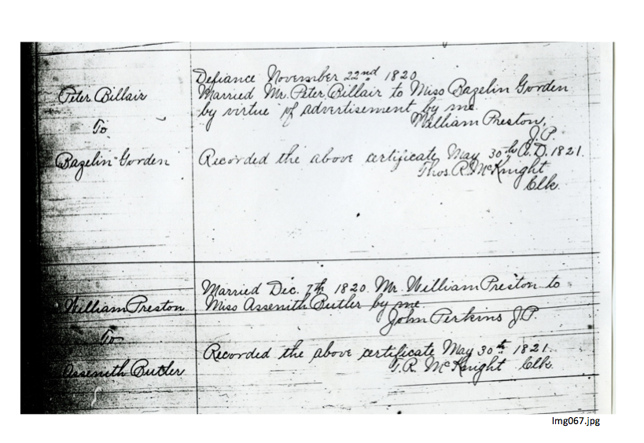

Examples from my working file
William and Asenath get married
In "Ancestry for Sale," I wrote, "[My ancestor, who we affectionately refer to as Sheriff William Preston, married] in 1820, probably at Defiance [then Williams County, Ohio]. Since Williams [County, Ohio] doesn't have a place to keep records until 1824, recording of the good sheriff's marriage is delayed six months; it's finally written into the books of Wood County--two Ohio counties to the east." (See digital image of William and Asenath's marriage record below.)
In a relatively simple research process, I could easily and quickly make a finding of best evidence (what some of you call my conclusion); my research notes are then summarized into a working file reference note, as below.
"...William Preston married, probably at Defiance, then Williams County, Ohio, 7 December 1820 to Asenath Butler [1] ...."
[1] Wood County, Ohio marriages 1: 2, Mr. William Preston and Miss Assenith Butler, married 7 December 1820 by John Perkins, J.P., recorded 30 May 1821; FHL microfilm 406,699. The marriage most likely occurred at Defiance, then Williams County, Ohio, where both William Preston and John Perkins were pioneer setters (History of ...., pg XXX). See also Wood County, Ohio marriages, same volume, same page, Billair to Bazelin-Gordon, marriage by William Preston, JP, and the dateline, "Defiance November 22nd, 1820" -15 days prior to Preston-Butler marriage.
The Billair marriage recorded also 30 May 1821 at Wood County. Ohio created both Wood and Williams counties at the same time; between XXX and XXX Wood County served as an administrative repository for some Williams County records .
|  |
| Wood County, Ohio, marriages 1:2, Preston-Butler 1820 |